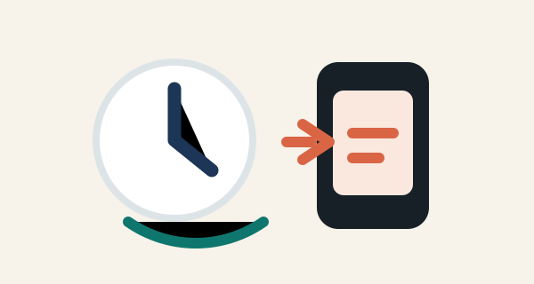
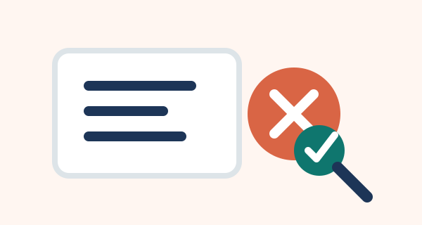
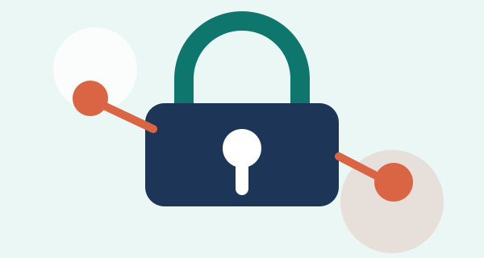
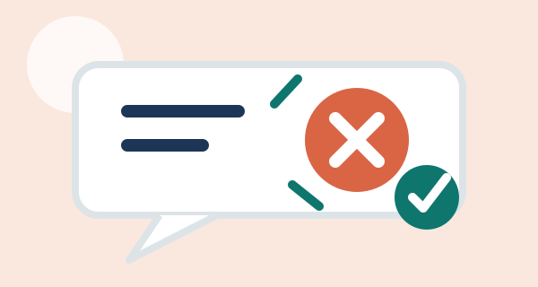

Distracción y bienestar
El uso excesivo puede afectar el descanso, la concentración y el estado de ánimo.

Desinformación
Las noticias falsas se comparten rápido, por eso conviene verificar antes de publicar.

Privacidad
Publicar datos personales puede exponer información que debería mantenerse protegida.

Ciberacoso
Los comentarios ofensivos y el acoso digital pueden afectar a las personas emocionalmente.